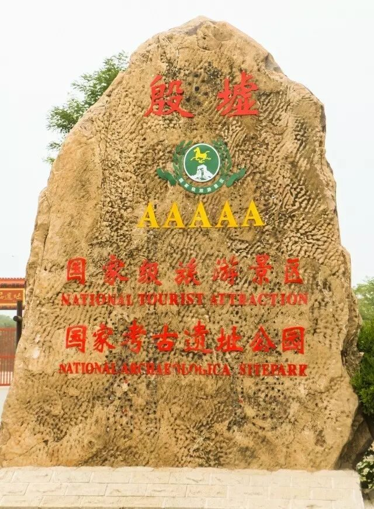
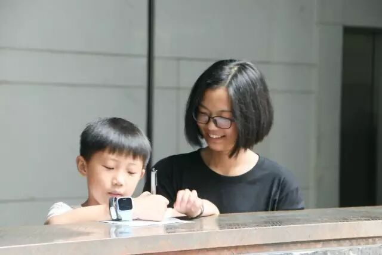
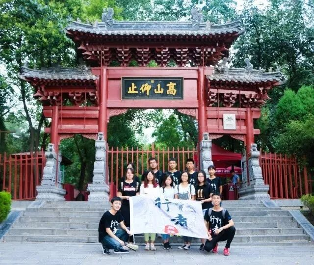
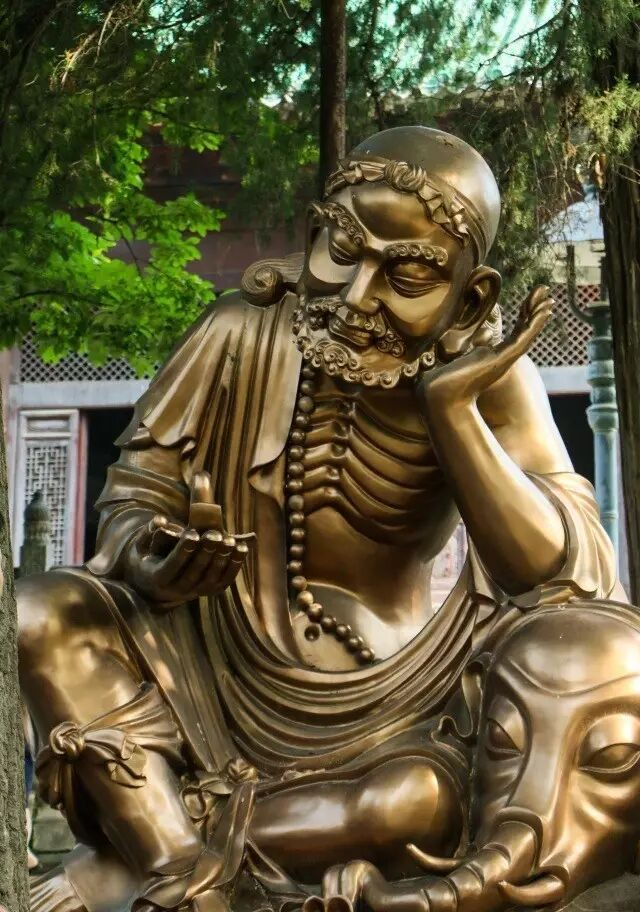
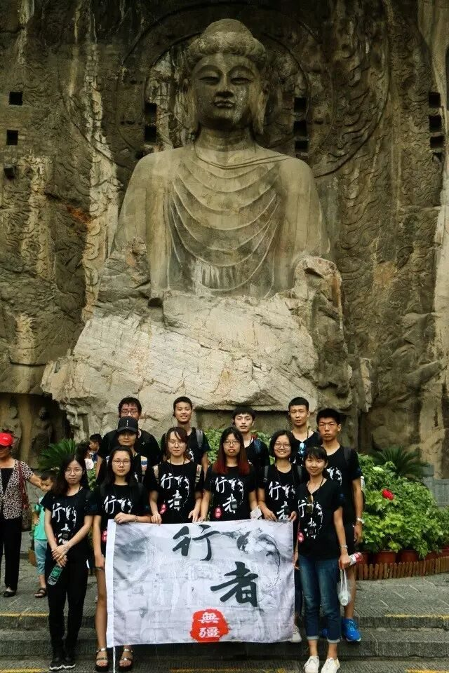

【行者明信片·拾·穿越时空，豫见文化】
拾
穿越时空
豫见文化
——文：陈沫如
“得中原者得天下”——河南向来是兵家必争之地，她见证过无数政权更替，也接纳着各路文化，形成了自己独特的气质。走近她，我们感受着文化的交流与碰撞，仿佛穿越了时空，进行了一场文化苦旅，中原文明的画卷缓缓展开……




（左1）殷墟
（左2）中国文字博物馆
（左3）笔者在馆内调研
（右1）团队于嵩阳书院
（右2）少林达摩像


中 国
文字博物馆
|
殷墟
|
嵩阳书院
|
少林寺
安 阳 & 登 封
在中国文字博物馆,从仓颉造字的传说开始，上下五千年的文字历史悉数展现眼前，文字发展的迅速与完备，使人不得不惊叹于古人的智慧；
在殷墟，看着出土的精美青铜器和陪葬的森森白骨，仿佛回到商朝，看到了那个时代贵族们的奢靡生活，自然也为陪葬制度的残忍扼腕叹息；
在嵩阳书院，树林阴翳，鸣声上下，怀着朝圣的心情踏入学堂，思绪被拉回古代，似乎自己也是其中努力求学的一位，在先生的教导下进步飞快；
在少林寺，参天古木上大师们练功时留下的“一指禅”的印记让我印象深刻，武校学生们的表演同样精彩纷呈，从中我看到了传承与发展，总有人唱衰少林，说其功夫没落，我看未必。
十三朝古都——洛阳
在白马寺，我感受到了文化的交流与融合，作为中国第一古刹，它本就是官方对佛教传入中国的承认，千百年来一直香火鼎盛，为中外佛教徒交流提供了良好的平台。
我的时空之旅在洛阳的丽景门达到了高潮。作为洛阳的“新八大景”之一，它的确配得上“不到丽景门，枉来洛阳城”这样的殊荣。去的时候正是傍晚，夕阳的余晖将城门衬托得格外威严。进了城门之后便是集市，道路两旁古色古香的建筑让人仿佛梦回古都，路边叫卖的小摊贩使得这里格外有烟火气息。思绪不禁飘远：古时的集市怕是最热闹的地方了，无论贫富贵贱，都能在这里各取所需。而我们就像是书堂里结伴而行的同窗，在期待已久的休息日里来集市彻底放松自己，幸甚至哉。
白
马
寺
&
&
&
丽
景
门


龙门石窟
第二天的龙门石窟是本次文化之旅的终章。虽然心痛于它“十洞九空”的现状，但能一睹卢舍那大佛的风采，我仍然觉得不虚此行。
“百闻不如一见”用在卢舍那大佛身上再合适不过了，真正站在她面前时才意识到，所有的语言都是苍白的，她的神韵绝非三两句话所能形容。看着她温柔的眉眼，不怒自威的神态，恍惚中仿佛回到大唐盛世，那个靠着自己一步步打拼最终取得皇位的女帝仍然端坐其上，无论是受万人朝拜还是被人唾弃，她都不发一言，慈悲怜悯地看着人世间，是非功过留与后人说。
哈哈
行者的旅行
源自于大家共同的努力
白
1
沫如有话告诉你


这次完美的文化之旅能够成行，跟我们“行者无疆”实践团队在队长的合理安排下，分工明确、配合默契密不可分。
调研组和后勤组前期做了很多准备工作，是整个文化调研工作的基础；
多亏了摄影组我们才能将行程中的点滴记录下来，成为永久的回忆；
文字组在调研期间熬夜写文字，整理大家每日的心得；
宣传组更是贯穿调研始终，与各个组协调配合得很到位。
“行者无饭”
“行者无眠”
调研工作固然是辛苦的，紧张的行程经常使得我们的吃饭睡觉时间都没有保障。可是跟着团队一起总是觉得有无尽的力量，“行者无饭”也好，“行者无眠”也好，都不是打败我们的理由。或许正是“患难见真情”，我们的团队有着很强的凝聚力，大家只认识了几天却仿佛老友，可能这就是我们“行者无疆”的魅力所在吧！
最后，我想对团队里的大家说：很高兴认识你们，与你们相遇是我这个暑假最快乐的事情！

河南行
且将新火试新茶
诗酒趁年华
行者无疆
♦
贰
公众号：行者无疆实践团
微博号：行丶者丶无丶疆
邮箱：2758025831@qq.com